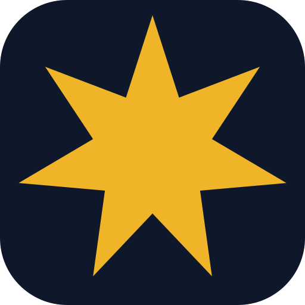

<!DOCTYPE html>
<!--
    @file index.html
    @description App shell de Seshat.
    Frame principal — carga una sola vez.
    Loader inyecta el nav y las vistas dinámicamente.
-->
<html lang="es">
<head>
    <meta charset="UTF-8">
    <meta name="viewport" content="width=device-width, initial-scale=1.0">
    <title>seshat v1.0.0</title>
	<!-- Iconos -->
	<link href="./brand/favicon-96x96.png" rel="apple-touch-icon" type="image/png">
	<link href="./brand/favicon-32x32.png" rel="icon" sizes="32x32" type="image/png">
	<link href="./brand/favicon-16x16.png" rel="icon" sizes="16x16" type="image/png">
	<link href="./brand/favicon.ico" rel="shortcut icon">
    <!-- Estilos -->
    <link rel="preconnect" href="https://fonts.googleapis.com">
    <!-- Google Fonts -->
    <link rel="stylesheet" href="https://fonts.googleapis.com/css2?family=Sora:wght@400;600;700&family=Inter:wght@400;500&display=swap">
    <!-- Material Icons -->
    <link rel="stylesheet" href="https://fonts.googleapis.com/css2?family=Material+Symbols+Outlined" />
    <!--
        Script de tema — debe ejecutarse en <head> antes del render
        para evitar el flash de tema incorrecto (FOUC).
        Preline HSThemeSwitch lo gestiona, pero necesita leer localStorage primero.
    -->
    <script>
        if (localStorage.getItem('hs_theme') === 'dark' ||
            (!localStorage.getItem('hs_theme') &&
            window.matchMedia('(prefers-color-scheme: dark)').matches)) {
            document.documentElement.classList.add('dark');
        } else {
            document.documentElement.classList.remove('dark');
        }
    </script>
  <script type="module" crossorigin src="./assets/index-C32lqqoy.js"></script>
  <link rel="stylesheet" crossorigin href="./assets/index-CCIrWyWt.css">
</head>
<body>

    <!-- Shell — flex row, ocupa toda la pantalla -->
    <div class="flex w-screen h-screen">

        <!-- Sidebar primario — rail de íconos -->
        <aside class="shrink-0 w-16 bg-sidebar border-e border-sidebar-line flex flex-col">

            <!-- Logo -->
            <header class="flex justify-center items-center h-16">
                <a id="logo-link" href="./">
                    
                </a>
            </header>

            <!-- Nav primario — ítems generados por Loader desde PRIMARY_NAV -->
            <nav class="flex flex-col flex-1 items-center gap-y-1 py-3">
                <div id="nav-primary-top" class="flex flex-col items-center gap-y-1"></div>
                <div class="flex-1"></div>
                <div id="nav-primary-bottom" class="flex flex-col items-center gap-y-1"></div>
            </nav>

        </aside>
        <!-- End Sidebar primario -->

        <!--
            Secondary Sidebar — generado por Loader desde SECONDARY_NAV.
            w-0 por defecto, .is-open lo expande a 14rem via <style>.
            overflow-visible permite que el botón oreja sobresalga.
        -->
        <aside id="secondary-sidebar"
            class="relative shrink-0 w-0 overflow-visible transition-[width] duration-200
                   bg-sidebar border-e border-sidebar-line flex flex-col">

            <!-- Cabecera: título del módulo activo, inyectado por Loader -->
            <header id="secondary-sidebar-header"
                class="shrink-0 flex items-center gap-2 h-16 px-4 overflow-hidden">
            </header>

            <!-- Nav secundario: inyectado por Loader.renderSecondaryNav() -->
            <nav id="secondary-sidebar-nav"
                class="flex-1 overflow-y-auto overflow-x-hidden
                       [&::-webkit-scrollbar]:w-2
                       [&::-webkit-scrollbar-thumb]:rounded-none
                       [&::-webkit-scrollbar-track]:bg-scrollbar-track
                       [&::-webkit-scrollbar-thumb]:bg-scrollbar-thumb">
            </nav>

            <!--
                Botón oreja — sobresale del borde derecho.
                Oculto por defecto, visible solo cuando el secondary sidebar está activo.
                Gestionado por Loader.bindToggleButton().
            -->
            <button id="secondary-sidebar-toggle"
                class="hidden absolute -inset-e-3.5 top-5 z-20
                       size-6 items-center justify-center
                       bg-sidebar border border-sidebar-line rounded-full
                       text-sidebar-nav-foreground hover:bg-sidebar-nav-hover
                       transition-colors shadow-sm cursor-pointer"
                title="Colapsar panel"
                aria-label="Colapsar panel secundario">
                <span id="secondary-toggle-icon"
                    class="material-symbols-outlined"
                    style="font-size:14px"
                    aria-hidden="true">chevron_left</span>
            </button>

        </aside>
        <!-- End Secondary Sidebar -->

        <!--
            Content — Loader inyecta las vistas aquí 
        -->
        <div class="flex flex-col h-full w-full overflow-hidden bg-background">

            <!-- Área de navegación -->
            <header id="header-area" class="shrink-0 flex items-center gap-2 h-16 bg-navbar border-b border-border px-4 md:px-8"></header>

            <!-- Área de contenido -->
            <main id="content-area" class="flex-1 overflow-y-auto py-4 px-4 md:px-8"></main>

        </div>
        <!-- End Content -->

    </div>

</body>
</html>